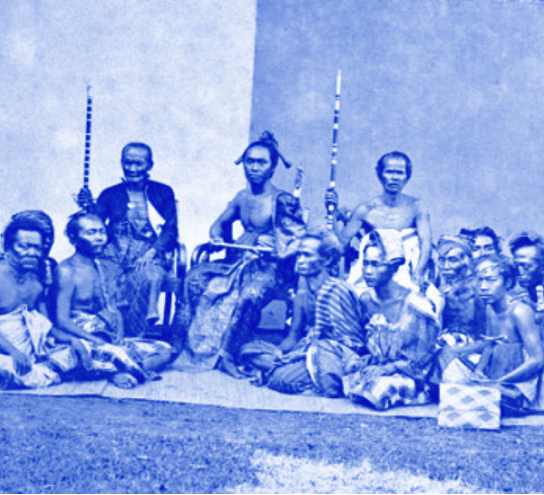

Explore
the past,
enlighten
your present.
Uncover
history's hidden
treasures.
Freshly Unveiled

Discover the untold stories
of the past and unlock
the secrets of history
Embark on a journey to unveil the lesser-known narratives of history, delving deep into the mysteries that have shaped our past, and discovering untold stories that illuminate the richness of our shared human experience.
Dive into the pages of history
and uncover the mysteries of
civilizations long gone.
Plunge into the annals of time, delving deep into the pages of history to unearth the secrets of bygone civilizations, revealing the profound mysteries that shaped humanity's journey through the ages.